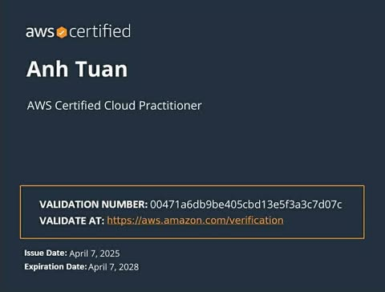
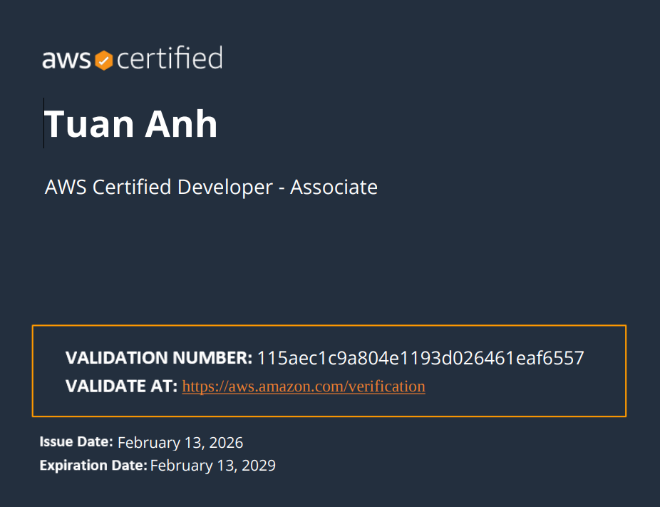
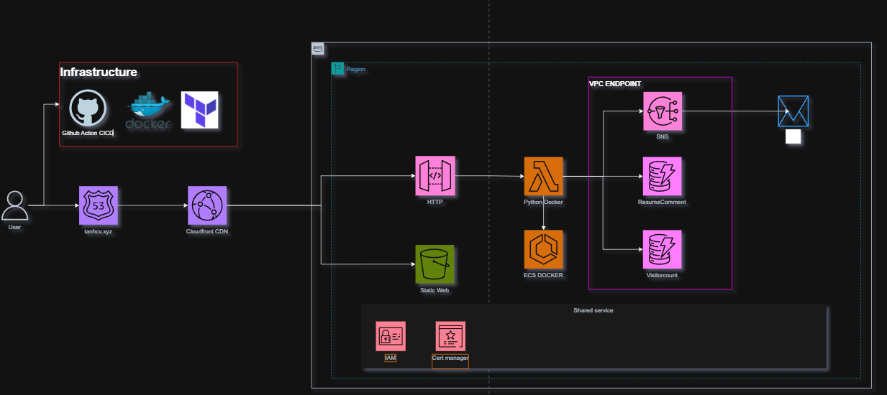
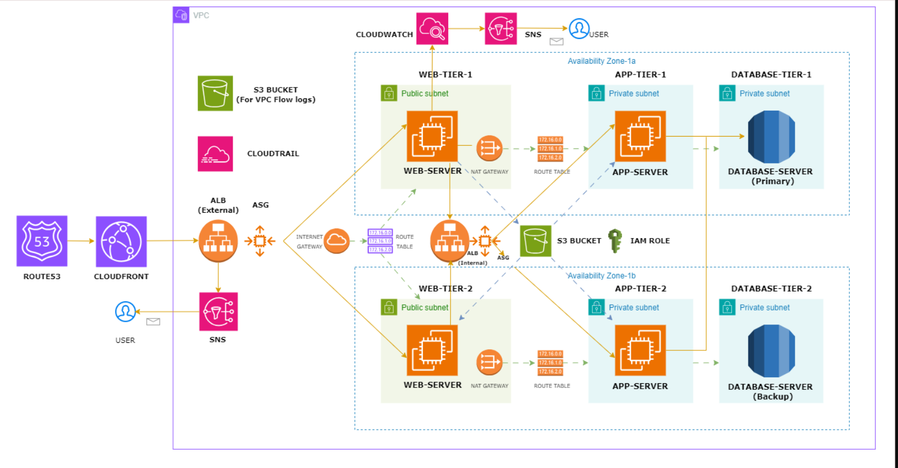

HELLO!
Passionate Cloud Engineer dedicated to building scalable infrastructure on AWS. As a Cloud/DevOps Intern, I have had some hands-on experience in AWS serverless architectures and Infrastructure as Code (Terraform). I am familiar with automating CI/CD pipelines (Jenkins, GitHub Actions) and managing containerized environments (Docker, Kubernetes), with a consistent focus on security and cost optimization.
Major in Mechatronic Engineering | Hanoi, Vietnam

April 2025
Validation: 00471a6db9be405cbd13e5f3a3c7d07c

February 2026
Validation: 115aec1c9a804e1193d026461eaf6557
Computer Vision (OpenCV):
LLM & LangChain:

Tech Stack: AWS, Terraform, Python, GitHub Actions.

Custom VPC with Public & Private Subnets across Multiple Availability Zones
Tech Stack: AWS VPC, EC2, RDS, ALB, ASG, S3, IAM, CloudWatch, CloudTrail, SNS, NAT Gateway
Connect with me professionally
https://www.linkedin.com/in/tu%E1%BA%A5n-anh-h%C3%A0-235921305/VISITORS
0